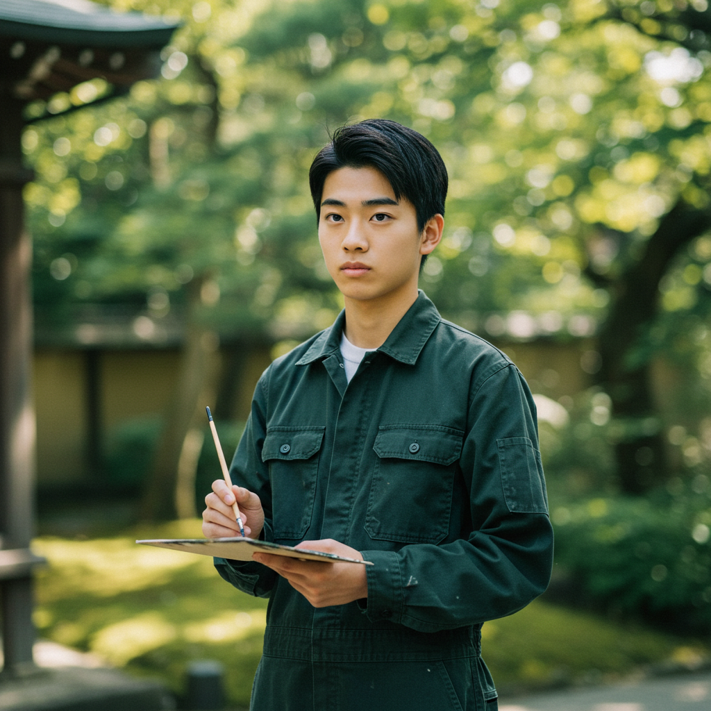
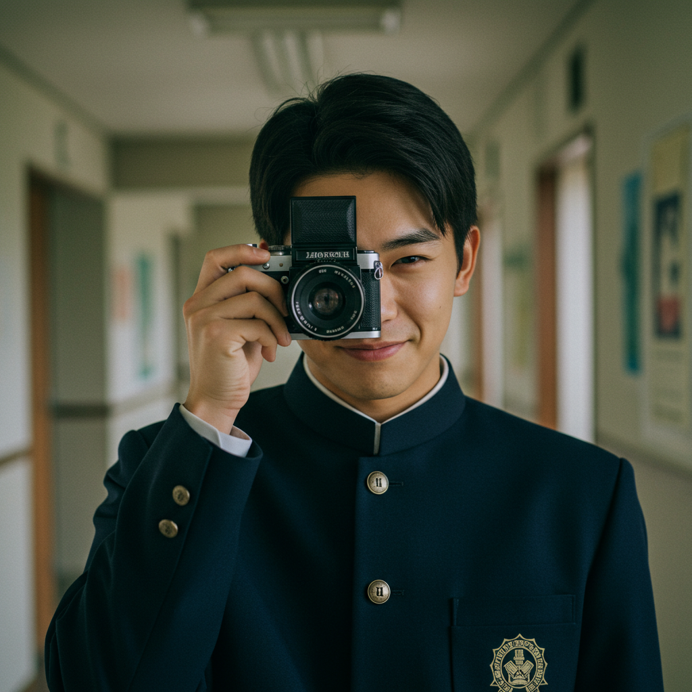
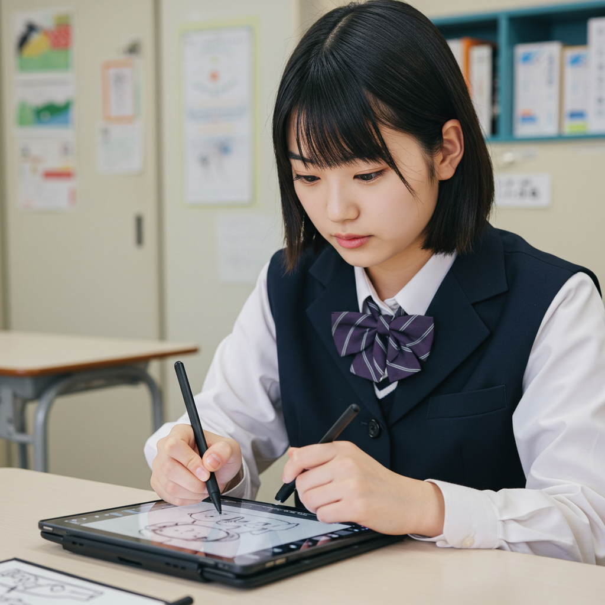

オープンキャンパス2025 Webサイト 造熱
Web制作ツール
制作期間2025/ 5 - 7
自主制作/グループ（4人）
役割要件定義・情報設計・デザインカンプのブラッシュアップ・コーディング
オープンキャンパス2025のWebサイトの要件定義からコーディングまでWebデザイン全般に関わり、チームを指揮しました。制作で最も意識したのは、「造熱」の体現です。仲間と共に造り、その熱と向き合うことで、2025年度オープンキャンパスは過去最高の来場者数を達成しました。
Concept
「造熱」を体現する
「造熱」とは、造るという人間的活動に対する熱意のことであり、2025年度オープンキャンパスのメインテーマでした。造形大におけるこの熱意は暑苦しい一面的なものでは無く、ある人によっては牧歌的で優しく、ある人にとっては直視したくない苦いものかもしれません。しかし、逃げずに向き合えば、芯がありながら変容し続ける自由な「造熱」があります。
Process
- コンセプトの定義・要件定義
- UI設計（ワイヤーフレーム デザインカンプ）
- メンバーとチェック・ブラッシュアップ
- コーディング・リリース
Persona

行きたい専攻のある高校3年生
川崎拓弥（19）
絵画専攻志望
趣味：映画・アニメ鑑賞 展覧会巡り
住まい： 地方(福島県)
リサーチ方法：デスクトップPC
進学後の1人暮らしなど不安も大きい。寮の情報なども気になっている。
一般受験のため、デッサンや絵画の参作をチェックしたい。まそ絵画専攻の説明会・面談にも参加したいと思っている。

進路の決まってきた2年生
若林康太郎（17）
写真専攻志望
趣味：ゲーム YouYube サッカー
住まい：都心
リサーチ方法：スマートフォン
AO推薦で入ろうと思っている。
普段から自主制作で一眼レフ写真を撮っており、受賞歴がある。
ポートフォリオを見てインプットしておきたい。色彩検定や英検なども気になっている。

まだ専攻を決めていない1年生
佐野麻由美（16）
写真専攻志望
趣味：ショッピング イラスト制作
住まい：都心
リサーチ方法：iPad 絵を描くためにiPadを愛用している。
造形大学には行ったことはなく、大学サイトで見たカフェや食堂にも行ってみたいため、午前から行く予定。
とりあえず色々な専攻に訪れ、自分の目指す進路のインプットを求めている。
3 Points
Point.1「情報が容易に手に入ること」
OCに来る受験生はある程度、自分の志望する専攻が絞られている。→いつどこで面談や説明会をしているかを少ないステップで手に入るようにする。
Point.2「創作意欲を刺激すること」
美大に行くからには、創作・造形に対して熱がある。実際に訪れる前から造形大での造形活動に造熱とワクワクを感じさせることを目指す。
Point.3「遊びがあること」
造熱は余裕から生まれる。 情報収集を目的とする際は無くても良いですが、あったらもっとサイトに価値がつくような、ワクワクする「あそび」要素を入れる。